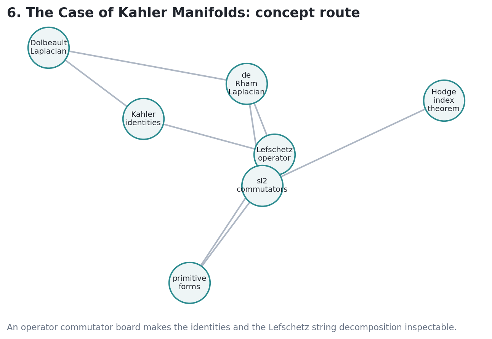
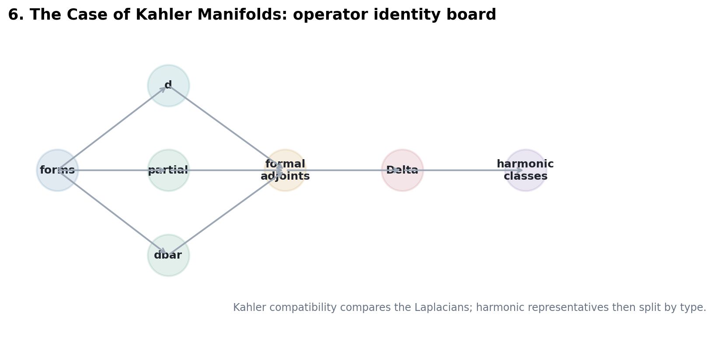

How the Kahler identities turn analytic harmonic theory into Hodge decomposition, Lefschetz strings, primitive classes, and the first signature constraint.
Relate \(d\), \(\partial\), \(\bar\partial\), adjoints, \(L\), and \(\Lambda\).
Use identities to compare \(\Delta_d\), \(\Delta_\partial\), and \(\Delta_{\bar\partial}\).
Decompose cohomology into primitive pieces and powers of the Kahler class.
Source span: printed pages 137-155; PDF pages 149-167.
Kahler commutators connect \(\partial\), \(\bar\partial\), \(L\), \(\Lambda\), and adjoints.
The de Rham and Dolbeault Laplacians have the same harmonic kernel up to constants.
Harmonic forms split by bidegree, giving \(H^k(X,\mathbb C)=\oplus_{p+q=k}H^{p,q}(X)\).
\(L(\alpha)=\omega\wedge\alpha\) and \(\Lambda=L^\ast\) form weight strings with \(H=[\Lambda,L]\).
Primitive classes are the lowest pieces of those strings before repeated raising by \(L\).
The Hodge index form has a controlled signature, not ordinary positive definiteness.

Inspection target: a path from Kahler identities to Hodge decomposition should pass through Laplacian comparison.
The identities have the schematic form
and their adjoint companions.
The exact constants depend on convention; the structural fact is that lowering by \(\Lambda\) converts a Dolbeault differential into the opposite adjoint.
on a compact Kahler manifold, after using the compatible adjoints and standard normalization.
\(\ker \Delta_d\)
harmonic representatives for singular cohomology with complex coefficients
\(\ker \Delta_{\bar\partial}\)
harmonic representatives that preserve bidegree \((p,q)\)
\(H^k(X,\mathbb C)=\bigoplus H^{p,q}(X)\)
type splitting becomes a theorem about the same finite-dimensional kernel
\(H^{p,q}(X)\) is represented by harmonic forms of type \((p,q)\).
The toy ledger satisfies Hodge symmetry and has even odd Betti numbers, matching a compact Kahler pattern.
\(H^k(X)=\bigoplus_r L^r P^{k-2r}(X)\)
A class is primitive when it is killed by the appropriate next power of \(L\), equivalently when it begins a finite Lefschetz string.
These relations turn powers of \(L\) into structured strings rather than unrelated wedge products.

The intersection form is not simply a positive inner product. On primitive middle-degree classes, the sign is governed by the Hodge-Riemann bilinear relations.
For a projective surface, the Neron-Severi intersection pairing has one positive direction, represented by the ample Kahler class, and negative directions transverse to it.
Start with a toy surface ledger \((b_0,b_1,b_2,b_3,b_4)=(1,0,22,0,1)\). Choose primitive seeds, raise by \(L\), and mark the first failed next raise.
Kahler identities compare Laplacians and let harmonic forms carry complex type.
De Rham cohomology decomposes as a direct sum of Hodge bidegrees.
\(L\), \(\Lambda\), and \(H\) organize classes into finite \(\mathfrak{sl}_2\) strings.
Primitive classes are the irreducible starting points for Lefschetz decomposition.
The Hodge index theorem records a precise sign pattern, not naive positivity.
The resulting decomposition becomes the language of Hodge structures and polarisations.